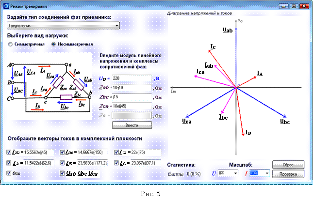
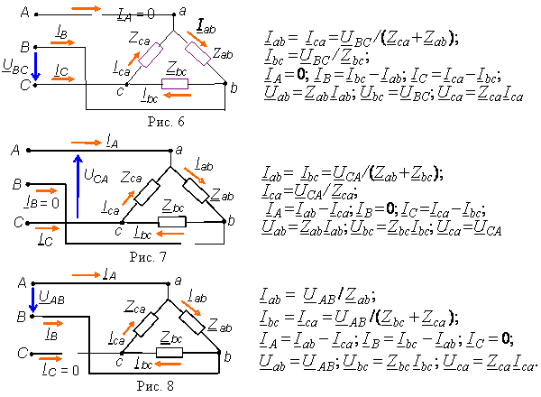

1. У трёхфазного приёмника,
фазы которого соединены по схеме, треугольник (рис. 5), нейтральный
провод отсутствует. Линейные напряжения источника UAB, UBC и UCA равны фазным
напряжениям приёмника, т. е. Uab = UAB = Uл, Ubс = UВС = Uл Uса = UСА = Uл а комплексы линейных токов равны разности комплексов соответствующих
фазных токов, т. е.: IA = Iab - Ica, IB = Ibc - Iab, IC = Ica - Ibc,
(*) где Iab = Uаb/Zаb, Ibc = Ubc/Zbc, Ica = Uca/Zca.  Iab = Ibc = Ica = Iф = Uф/Zф, при этом действующие линейные токи IА = IB = IC =Iф. В несимметричном треугольнике комплексы фазных токов Iab = Uаb/Zаb, Ibc = Ubc/Zbc, Ica = Uca/Zca, а комплексы линейных токов находят по выражениям системы (*). 3. У трёхфазного приёмника, фазы которого соединены по схеме
треугольник, при обрыве, например, фазного провода "аb" ток Iab =
0, а комплексы
токов необорванных фаз Ibс = Ubс/Zbс и Iса = Uса/Zса. При
этом комплексы линейных токов IA = -Icа, IB = Ibc и IC = Ica - Ibc. 4. Короткое замыкание фазы приёмника, соединенного по схеме треугольник,
приведёт к режиму работы с оборванной фазой в виду возрастания тока в этой фазе
и перегорания в ней предохранителя. 
ПРИ СОЕДИНЕНИИ ФАЗ ПРИЁМНИКА ТРЕУГОЛЬНИКОМ И РАЗЛИЧНЫХ
РЕЖИМАХ ИХ РАБОТЫ
Действующие
фазные токи в симметричном треугольнике
11.
При соединением фаз
приёмника по схеме треугольник обрыв линейного провода преобразует
трёхфазную систему напряжений в однофазную. Схемы цепей и расчётные формулы при
обрыве линейного провода "А" приведены на рис. 6, при обрыве
линейного провода "В" – на рис. 7 и при обрыве линейного
провода "С" – на рис. 8).